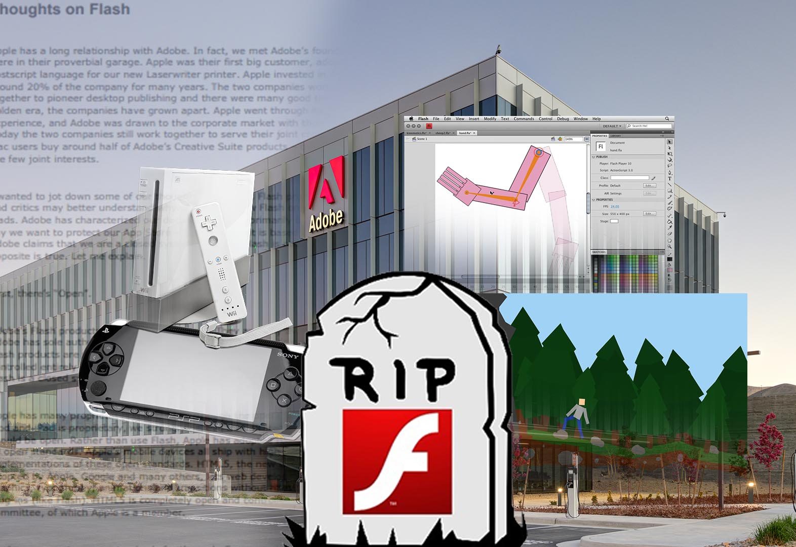

Durante la llamada “época dorada” de internet, aproximadamente entre 2010 y 2016, millones de usuarios llegaron a disfrutar juegos, animaciones y experiencias interactivas creadas con el formato .swf, asociado directamente a Adobe Flash Player. Para muchos internautas, estos contenidos se convirtieron en piezas de culto: títulos como The Right Mix, Mutilate a Doll 2 o innumerables juegos de plataformas como Friv y Newgrounds marcaron una generación completa.
Aunque para la mayoría Flash pareció ser solo una etapa breve de entretenimiento, detrás de esta tecnología existía un ecosistema sorprendentemente complejo, con herramientas avanzadas para desarrolladores, innovaciones técnicas adelantadas a su tiempo y decisiones corporativas que incluso involucraron al propio Steve Jobs.
La historia comienza en 1996 con FutureWave Software, una pequeña empresa que desarrolló FutureSplash Animator, un programa diseñado para crear animaciones vectoriales de forma eficiente. En una época donde las conexiones eran lentas y los equipos tenían recursos limitados, el uso de gráficos vectoriales era esencial para evitar sobrecargas. Este enfoque anticipaba conceptos que hoy asociamos a tecnologías como CSS o CSS3, que permiten estilos y animaciones ligeras en la web moderna.
Posteriormente, la tecnología fue adquirida por Macromedia, que la expandió y la transformó en una plataforma completa para la creación de contenido interactivo. Macromedia desarrolló herramientas que sentaron las bases de lo que más tarde impulsaría videojuegos, animaciones y experiencias multimedia que definieron la cultura digital de principios de los 2000.
En 2005, Adobe adquirió Macromedia, consolidando y perfeccionando el ecosistema. Adobe impulsó la distribución de Flash, mejoró sus herramientas y lo integró en entornos profesionales y sistemas embebidos. Fue en esta etapa donde surgió una de las herramientas más influyentes: Adobe Flash Professional.
Flash Professional era un entorno de desarrollo integrado que combinaba línea de tiempo, diseño vectorial y programación. Su lenguaje principal, ActionScript 3, representó un salto enorme respecto a sus versiones anteriores. Basado en ECMAScript, compartía similitudes con JavaScript y poseía una arquitectura orientada a objetos comparable a C#. Además, se ejecutaba sobre la máquina virtual AVM2, una de las más rápidas y eficientes de su época.
El ecosistema era tan flexible que permitía extensiones, motores de físicas y efectos avanzados. Gracias a esto, surgieron títulos emblemáticos como Mutilate a Doll 2, Happy Wheels e incluso versiones tempranas de Angry Birds. Flash no solo era potente: también era accesible, lo que permitió que miles de desarrolladores independientes crearan contenido innovador sin grandes recursos.
Sin embargo, el declive de Flash comenzó en 2010. Tras el lanzamiento del primer iPhone, Steve Jobs publicó un comunicado criticando duramente a Flash y explicando por qué no sería soportado en iOS. Entre sus argumentos mencionaba problemas de rendimiento, consumo excesivo de batería y vulnerabilidades frecuentes, incluyendo ataques de día cero casi semanales.
Aunque algunos de estos puntos eran válidos, también existía un motivo estratégico: permitir que los usuarios accedieran a juegos y animaciones gratuitas desde la web no era conveniente para el modelo de negocio de Apple, que buscaba centralizar el consumo de contenido a través de la App Store. Esto obligó a muchos desarrolladores a abandonar ActionScript y migrar hacia tecnologías como HTML, CSS y JavaScript.
Con el tiempo, la falta de soporte en dispositivos móviles, la pérdida de desarrolladores y la presión de estándares abiertos llevaron a Flash a un declive irreversible. Finalmente, el 31 de diciembre de 2020, Adobe anunció el fin definitivo del soporte para Flash, cerrando así la historia de un ecosistema que impulsó internet durante más de dos décadas.